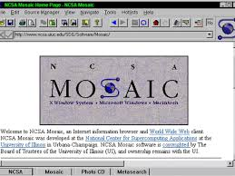

Linea del tiempo de los eventos más representativos en la historia del internet
1993 - APARICION DEL PRIMER NAVEGADOR
En 1993 apareció NCSA Mosaic, creado por Marc Andreessen y Eric Bina en la Universidad de Illinois; fue el primer navegador gráfico de amplia difusión y el primero en mostrar imágenes integradas con el texto.
